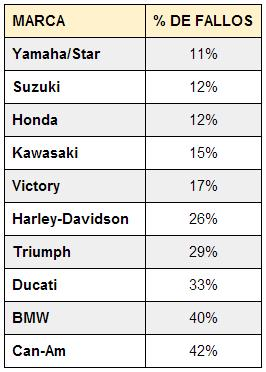

YAMAHA
Historia de la marca
La marca Yamaha toma el nombre de su fundador, el japonés Torakusu Yamaha, quien ya en 1887 construye su primer órgano musical, una habilidad artesanal que supuso el origen de un grupo corporativo y multinacional conocido hoy en día por su nivel de tecnología, capacidad de producción y ventas mundiales.
Yamaha es una empresa con más de 125 años de Historia que opera en la actualidad con dos compañías independientes, Yamaha Corporation y Yamaha Motor Co., Ltd.
Yamaha Corporation, la empresa originaria, es líder mundial en fabricación de productos audiovisuales, instrumentos musicales, herramientas de producción musical y nuevas tecnologías aplicadas; la compañía cuenta con cerca de 20.000 empleados y 69 filiales en todo el mundo.
La compañía fue fundada en 1897 con el nombre de Nippon Gakki Co., Ltd. con un Capital Social de 100.000 yenes. En 1900 Nippon Gakki comienza la producción de pianos de pared. En 1949 la sociedad empieza a cotizar en el mercado de valores de Tokyo, hito que marca el inicio de un proceso imparable de diversificación de la marca hacia nuevos productos y aplicaciones tecnológicas. En 1954 Yamaha fabrica su primer reproductor de Audio HiFi.
Logo

Fiabilidad
Esta marca es la mejor en cuestion de fiabilidad.
